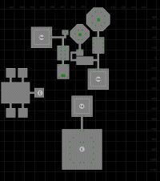

Introduction
So, as of this writing (Jul 2004), it's Gates of Discord Era, with Omens of War fast approaching, and all the uber guilds have long since moved on and left Ssraeshza Temple sitting mostly abandoned. Time to see what all the fuss is about.
But now you're looking for information about Sshraeshza Temple, aka: Ssra. As a (then max) level 60 monk, I'd learned all about this zone .. my guild was in it for months. Yet when friends asked me for links to good information about Ssra, I was unable to point them to anything other than lists of loot from boss mobs and tantalizing 2 sentence excerpts from sites like theSafehouse. So I've taken the time to assemble this guide in the hopes of consolidating net information and capturing in-game lore I've learned.
If you're in an uber guild, you've almost certainly spent enough time here that you're SICK of this zone. There are no less than TEN 'boss level' encounters with top notch Luclin-era loot (75-100hp/mana items), as well as the typical smattering of Named mobs (for item and spell drops), two key quests and two bane quests. You can also xp here in a traditional or AE group.
This guide will NOT tell you how to run any of the Boss encounters. I've fought 'em all, but I only know the way our guild does it .. your guild will surely have a different approach. Besides, it's fun to figure em out. I will, however, mention some things about each Boss fight, as some of them are pretty interesting.
Im going to focus on the xp and named camps that you can handle with one or two groups. Hopefully this information will help anyone who wants to experience a bit of Ssra w/o the full blown 50 person raids.
If you happen to be a puller (SKs, Rogues, and Monks; in that order unfortunately) I'll include some pulling information as we go along.
- Arrival / Setup - How do you get here?
- Maps / Getting Around - My Modified eqmaps images, with mobs locations
- Xp / Mobs - What sort of mobs and where they are
- Named - Campsites for those named mobs
- Quests - Campsites for quest drops
- Bosses - Brief boss overview
Arrival / Setup
Ssra temple is centrally located in TheGrey, an airless zone inconveniently located in Luclin. Srra temple itself, however, has air. Dont forget to take off your EB item when you get there.
Air Travel
The closest portal to Ssra is in Twilight. You'll head Twightlight -> Scarlet Desert -> The Grey -> Ssra. Wizards and Druids can provide transportation to twilight.
Twilight: From the port in point, head directly west over the water until you reach a canyon on the west wall of the zone.
Scarlet Desert: Once you zone into Scarlet desert, you might want to consider invis. Green mobs can agro and annoying you. Follow the canyon west-northwest, taking the right hand branch at each opportunity. You'll eventually reach a 'big rock' in canyon with a T-junction after it. Dont take either turn.. hop out of the canyon here and continue west to the zone out. Put on your EB gear before zoning in.
The Grey: Put on your EB gear and invis up if you wish. Head due west until you see the Pyramid-shaped Temple. The zone-in is on the east face of the temple, so run down the ramp (past the golems) and zone right in. Mobs in TheGrey LOVE to stun you (Rock things and golems) so watch out for that.
PoK Book Travel
PoK books have made travel around Norrath alot easier, but I'm afraid they don't help you get to Ssra. All the PoK books lead to racial starting cities, and the only racial class that starts on Luclin is the VanShir. That PoK book is located too far away to be of any use. If you're trying to PoK book to Sssra, just suck it up and run from the nexus. (See the 'Ground Travel' section below.)
Ground Travel
|
Netherbian Lair: From the nexus, run til you reach the pillar. hang a right and run to the zone out. Marus Seru: Leave the zone-in buildiong and head due north-ish til you see the zone out cave. If you're like me with bad Seru faction, you'll have a bunch of green Seru lego's chasing you.. Mons Letalis: The main reason NOT to go this way. This zone has gotten more people lost or killed than I care to remember. Lev / safe fall / Invis is good here, as the canyons are steep and the mobs can put a good dent in you. Here's my 'navigation landmarks': From zone out, point yourself so you're heading north(west)ish and line up so you're going between two peaks/boulders. Continue North, staying HIGH along the ridge line (to your left side should be the spire-platform-thing). After you crest that ridge you should then stay high on the LEFT of the next ridge, still heading north. The zone in should be ahead of you. As I said it's hard to describe and easy to get lost. The canyons will NOT lead you to the zone out. The Grey: Put on your EB gear and invis up if you wish. Head due north until you see the Pyramid-shaped Temple. The zone-in is on the east face of the temple, so avoid the ruins filled with undead and run down the ramp (past the golems) and zone right in. |
Airless
TheGrey is airless. You'll need an EB item. The most common ones are the classic Fishbone Earring, or the Amulet of the Grey Wastes. I DONT recommend spell-based EB or DMF for xp sessions. They're ok for simply dashing thru TheGrey (aka: Training) to zone into Srra.
Some notes about suffocation. As soon as your air bar runs out, you start dying. Death by suffocation is NOT hit point based. You lose a FIXED percentage of your health per TICK of suffocation. This means you'll suffocate just as quickly with your gear/buffs as without them when you're running nekkid back to ssra for CR.
Nekkid CR
You KNOW it will happen, especially if you're raiding and need to coffin. (/feedback: retrofit Luclin zones with 20 minute Graveyards!) You *can* make the run from Mons Letalis w/o EB as long as you have a decent SOW. BEWARE tho .. mobs LOVE to stun nekkid folks. Nothing is as painful as nekkid suffocation corpses littered 'very close' to the zone in.. DA-Type spells/abilities will NOT stop suffocation damage, (Hurm, verify. -Jolo) tho they work well for training past the golems. For raid CR/Coffin work we usualy station a patient druid / necro at the air-side of the TheGrey to EB/SOW/DMF people for the nekkid run to Ssra.
Binding and Safe Spots
You CANNOT bind in Ssra, tho there are several safe spots to camp out or afk for hours. The zone-in is risky due only to trains. There's a safer spot to AFK, but its in the basement near the mines so its not ideal for CR purposes unless you happen to be camping in the basement. Other safe spots include numerous 'raid staging' areas on the 3rd floor (the Cell-Room, Insignia toob) and numerous hallways elsewhere .. Ssra's only roamimg mobs are found in the basement.
References
Maps / Getting Around
Ok, you've made it to ssra with your xp group or raid. Now where do yo go? First a few words about getting around in Ssra, then we'll dive right into the guided tour.
Tube Travel
Travel between floors in ssra is accomplished by swimming up or down water-filled tubes surrounded by swirling rings. The tubes are short enough that you dont need an EB item. Entering a tube can only be accomplished through the one 'entrance' that's always facing the door of the tube area. Exiting a tube is similiar in that you can only exit in one direction: the trick is determining which direction it is. Take your time, you can sit in the tube and rotate until you see the doorway out of the tube room.
If your puller has pulled the usual three 'tube guards' before moving up a tube, it is possible to exit the tube w/o agro'ing the 2 guards posted at the ramp to the tube area. The is usually only important when moving to Insignias or the third floor 'Cell Block' as the ramp guards here are much nastier than the usual Shissar.
Invis / Call of Hero / Coffin'n
Invis works on most mobs on the first floor and selected mobs on the 2nd floor. Most noticibly, you can invis safely from zone-in to the basement. Once in the basement watch out for the roaming Taskmaster / Warden, both of which sees invis, but are easy to dodge. At the first room from zone-in, there's one mob stationed at the door leading to the 2nd floor AL/HP/Creator tube that usually sees invis.
Call of Hero works here, with the notable exception of the Emperor rooms past the Emp Portal. Once you use your key to port into the Emperor rooms, you can't CoH. Otherwise you'd only need to have a mage with the Emp Key to CoH your entire raid into the Emperor / Blood room. Similarly, 'ghetto Coh' via SK/Necromancer will also work with the exception noted above.
Restricted Access
Besides the usual rogue-pickable doors (of which there are five(?)), there are several locked doors in ssra that require special mob-dropped keys or items to activate. The first of these is on the 2nd floor where you will encounter two locked tube rooms. Each of these doors requires a different key that uncommonly drops from either Commander1 or Commander2. The NODROP key, thou not SOULBOUND, once used, goes on your keyring. The 3rd floor portal to the Emperor / Blood rooms is also locked and requires an item, the Ring of the Shissar, to activate.
Corpse Recovery
Corpse recovery in Ssra can be a real pain. There are restricted access areas that may make it difficult or impossible to get back to your corpse. Be aware that camping on the 'other' side of a rogue or item-locked door can trap you there or make life difficult if something (LD, Death) happens to your key'd party member. Basement CR is easiest, as there are numerous ok place to camp down there and its easy to invis to the spot you wiped. Third floor boss wipe-outs will mostly require coffins.
With the POP addition of rogue 'Shroud of Stealth' and the keyring, most of the truly hideous CR issues can be avoided. If your rogue doenst have SoS you still may need to be aware of where you are fighting and any possible CR concerns. ie: your key'd puller dying behind a locked door. Oops.
Sneak
Agro radius on the mobs here (for the most part) is SUPER small. Using monk sneak (a much neglected monk skill, imo), you can get almost anywhere. You can literally walk over their tails at times. You can also dash past some of em before they notice you, even w/o sneak. Just be prepared for a train if that doesn't work for you. I have rather fond memories of sneak-draggin some bodies out of AL's chamber and down to the first floor..
Guided Tour
I started with some maps on EQMaps and editted them to include mob locations. And yes, I've spent THAT much time in Ssra that I know where all the mobs spawn. :( It helps that I'm often pulling.
Note that clicking the thumbnails below will load a full sized map.
| First Floor | Second Floor |
|---|---|
| Third Floor | Basement |
|  |
{kind=link}
{kind=link}
{kind=link}
{kind=link}
First Floor
The First floor is mostly about getting to the various tube rooms that take you to other parts of ssra. There's one boss mob: Rhag1, and four named shissar, including Commander1.
Basement Tube: This area contains passages to the basement and the Rhag1 area, the easiest Boss in Ssra. The Rhag1 room is entered via a hidden hallway. Some named can spawn (including Commander1) in any of the three little three-mob rooms along the way to the basement tube. A rogue-locked coffin in one of the 3-spawn rooms leads to the Assassin Area. None of the mobs on the way to the basement see invis.
Assassin: Accessible only via a rogue, this area is hidden behind a locked coffin. There's TWO traps in the hallway, the first of which can be disarmed. The second trap is a secret wall that LOOKS like it should lead back to zone in. Instead, its a pit that drops you into the basement, where you'll likely take fatal falling damage. Any of the mobs in this area can also spawn Commander1. The 2nd locked coffin guards access to a tube that goes directly to the 3rd floor Insignia / Blood / Emperor area. The top of that tube is NOT a place to xp.
Zone In, Two-tubes: Then northen tube room leads to the 2nd floor and provides (eventual) access to the ArchLich, High Priest and Creator rooms. The southern ramp/tube provides access to a disjoint part of the 2nd floor where Rhag2 can eventually be found. The only named to be found in this area is Commander1, tho he doesnt spawn in the zone in room. The last 'green dot' mob right before the northern tube room almost always sees invis.
Basement
The Basement is divided into three main areas. The 'Ghetto', the Mines and the Temple. Cursed bosses are contained here, as well as a smattering of named Shissar and skeletons for item and quest drops.
The Ghetto: The 'Ghetto' (lots of sick people and trashy little houses) occupies the northern third of the basement and contains mostly green non-agro mobs and an NPC that explains how to do some quests. Two of the Cursed trigger Taskmasters live here as well. A Roaming Taskmaster (TM) has it's spawn point just inside the entrance.
The Mines: The Mines occupy the southern third of the basement. There's large minecart between two buildings, with some tracks leading into a cave full of skeletons. On the far east side, behind the building, is a forge for making Shissar bane weapons. The area around the minecart and forge are safe places to AFK and/or camp out. The buildings contain shissar and four of the Cursed trigger Taskmasters.
The caves are densely packed with agro-passing skeletons. These make great AE groups if you can handle the unstunnable named (marked on map with a yellow star). The Lucid Shards (VT Key quest) and Strange Green Ore (Shissar Bane quest) drop in the skele caves. At the far end of the mines is a dead end. On the other side is a one-way zone to TheDeep. If you fight the Thought Horror Overfiend, there's an exit from his room that zones you into the back of the ssra skele cave behind a one-way rock door. You can't zone from Ssra into theDeep tho.
The Temple: The Central section of the basement is home to two roaming Cursed trigger taskmasters and a random roamer. The buildings on the east side contain a number of static mobs. A locked section of the complex contains two Cursed trigger Rhothz. When a raid is doing the Cursed Cycle, the Boss mobs spawn on the top (purple star) of the east side builings.
Taskmasters / Rhozths
The Taskmasters are part of the Cursed cycle (see more details below) and are marked on the map as purple squares. Two of them roam from the mines to the ghetto and back. Two of them have permanent homes in the ghetto, and there are four in the buildings outside the mines. Two larger snakes, the Rhozths, live in the secret-door/rogue accessible top of the eastern temple.
Second Floor
The Second Floor consists of two disjoint sections accessed from different tubes on the first floor. The southern half is the lair of Rhag2, and the northern section contains seperate tubes for access to the 3rd Floor Arch Lich and High Priest / Creator areas. There's two named shissar you can camp, The Shissar Mystic and Commander2.
Rhag2: The approach to Rhag2 leads past a number of normal Shissar mobs, 'any' of which can spawn the Commander2. Closer to the Rhag2 lair, the mobs (shown in green) turn into Shissar Lich mobs.
Comm2 / Access Tubes: This area contains passages to the Arch Lich Tube and the dual-purpose HighPriest / Creator Tube. Two of the doors here are locked and require mob-dropped keys (Zherozsh's Key and Zazuzh's Key). Almost any of the mobs here can spawn Commander2.
Third Floor
The Third Floor contains the tougher bosses: High Priest, XtC (Creator), Arch Lich and the Blood/Emperor Rooms. It is almost exclusively for raiding with the possible exception of farming quest items (Insigs) for the Emperor key.
Insignias: The top of this tube is considered a safe spot. No mobs spawn here and if you're careful getting out of the tube from the first floor, you can avoid agro'ing the two ramp guards, which are *significantly* harder than the mobs on the first floor.
The doors in the hallway connecting the two rooms are rogue-locked. The 2nd room contains the portal to the Blood / Emperor room and requires the Ring of the Shissar to port thru. The portal room is also considered 'Safe' and is the last chance you have to CoH people if you're headed up to Blood / Emperor.
High Priest / XtC (Creator): This is considered the CellBlock area, which provides a safe staging area and prep for the High Priest and Creator. If you're careful getting out of the intial tube from the first floor, you can avoid agro'ing the two ramp guards.
There are two traps, both of which can be disarmed.
ArchLich: Kiss your pullers goodbye here. The mobs on the way to AL are just brutal.
There's a trap in the hallway that can be disarmed.
Blood / Emperor: You can only get here if you've got a Ring of the Shissar. Call of Hero and Coffins dont work here. The port-in room is safe for only a LIMITED time ... then something nasty happens.
The rooms to the north and south are fake .. you can see into them and go a bit into the hallways, but you can't actually enter the rooms.
References
XP / Mobs
The Enemy: Yard Trash Mobs
Snakes, snakes and more snakes. And for variety, the occasional golem and skeleton.
As a general rule, you should snare mobs in Ssra. The 'undressed' (generally casters) will run and should probably be snared. The 'dressed' ones don't run.
First and Second Floors
The mobs on the 2nd floor are slightly harder than their cousins of the same name on the first floor. For instance, the Elite Guards on the first floor are easily mezzable, while the ones on the 2nd floor were not. (at least pre level 65)
The Elite mobs visibly carry weapons of various sorts: Ulak's, daggers, swords, etc. These can be combined with ore from the basement to make Shissar Bane Weapons. (See quests below).
- A Shissar Acolyte
- A Shissar Arcanist
- A Shissar Arch Arcanist
- A Shissar Arch Warlock
- A Shissar Defiler
- A Shissar Disciple
- A Shissar Lich
- A Shissar Observer
- A Shissar Priest
- A Shissar Revenant
- A Shissar Ritualist
- A Shissar Spirit Binder
- A Shissar Spirit Destroyer
- A Shissar Spiritward
- A Shissar Taskmaster
- A Shissar Templar
- A Shissar Tormentor
- A Shissar Warlock
- A Temple Guard
- A Temple Patroller
- A Temple Skirmisher
- An Elite Temple Guard
References
Named
I like my XP to include a chance at named mob. Its more fun to have the possibility of some loot drops. As such, here's the spots I've found where you can camp certain named mobs for a chance at their 'phat' lewts.
Basement
The Basement is divided into three main areas. The 'Ghetto', the Mines and the Temple. The Ghetto occupies the northern third of the basement and contains mostly green non-agro mobs and an NPC that explains how to do some quests. Some of the Cursed Trigger Taskmasters live here as well. Click the thumbnail for a larger image of the basement area.
Taskmasters
While nominally part of the Cursed trigger, these fellows are level 60 mobs with a 2 hour spawn time. People sometimes xp on them, or camp them for the 'Taskmaster Pouch', their part in the Emperor Key quest. However, the pouch is an actual 4-slot container, which most people don't have room to carry around. For this reason, getting a Taskmaster pouch is often the last mob to camp for your Emp Key.
Kunark Skeles
Marked on the basement map with yellow stars, these have definate spawn points. The first three are easily camped from the mine entrance. It requires some determination to camp the other three from zone in. If you're after Sssra Bane weapons, you want to kill as many of these as you can, as each can drop the strange green ore you're after.
The elusive 'Dusty Soriz Worker Pouch' also drops here.
Many is a time i've camped this with other monks or pullers who
want a free plentiful supply of pulling items. The pouch drops
from a specific named Skele, Hilbog Jasarth, who spawns at the
2nd yellow star in the mines.

Here are two excellent guides to getting the Soriz Pouch, from a monkly persepective. They were posted at Monkly-Business.com and are as follows:
- Reference: Clati Soriz
- Reference: Granic Obulus
- Reference: Kalin Nathsar
- Reference: Nerla Kunzar
- Reference: Hilog Jarsath
- Reference: Rutin Kylong
Disciple Zhorluhz
I don't know anything about this guy...
Reference: Disciple Zhorluhz
Guard Sklinus
Cocodrilo from Monkly Business says this guy is in the basement somewhere and 'never drops his caster-only haste belt'. He's supposed to be in the eastern temple, ground floor level.
Reference: Guard Skilinus
Spiritward Trilzic
I believe this fellow's spawn point is in one of the buildings near the skeleton mines.
Reference: Spiritward Trizlic
Defiler Juzlix
Often found looking out over the southern balcony of the
temple, Defiler Juzlix can drop this mask, as well as the
'belt' booby prize.

Reference: Defiler Juzlix
Prime Educator Ghozik / Arch Tormentor Zhesz
These interesting sounds named can be found in the far east side of the basement, on the upper/middle level of the temple. However much fun they are to kill, they've never dropped anything interesting, aside from the items on the global ssra loot table. They have really cool names tho. And there's a bunch of greenie captive NPC's that they seem to be lecturing / torturing. Neat.
- Reference: Prime Educator Ghozik
- Reference: Arch Tormentor Zhesz
First Floor
With the exceptions noted above in 'Getting Around', you can invis thru most of the first floor. Here's the same map from above, for convenience. Click for a larger image.
Commander Zazuzh
Otherwise known as 'Comm1', Zazuzh can spawn at ANY 'blue' snake spot on the first floor map. Normally people camp him for his part in the Emperor key quest, 'Zazuzh's Idol'. He rarely drops a /keyring'able key, imaginately titled 'Zazuzh's Key', that opens the 2nd floor door to the Arch Lich toob.
Our favorite spot to camp him was the first floor toob room to AL/xTC/HP area. From zone-in, take a right passed the see-invis snake and set up in one of the corners of the first floor toob room. With a little practice, your puller can keep all nine first-floor spawn points dead, as well as pulling the same nine spots from up the toob to the 2nd floor. In this fashion, you can camp 'comm1' and 'comm2' at the same time.
Reference: Commander Zazuzh
Shissar Assassin
Bring a rogue if you plan on camping this fellow, for he lives behind a rogue-lock'd door. His room is right before the toob to the 3rd floor 'Insignia/Blood/Emp' toob. He can spawn at any of the spots in the room, so your best tactics is to pick a spot (the entrance hall sometimes works, as does a corner, or a corner in the toob room) and clear the entire room.
Most of the times you'll be after his Illusion mask for a Bard/Rog who's collecting the racial illusions. He drops the kitty mask as his rare.

Reference: Shissar Assasin
Zhroushe Mezhkazh
To get to this guy's static spawn point, invis up and head towards the basement. Once you pass the Rhag-1 room, this fellow or his PH lives in a little cubby with 3 snakes. You can easily set up camp in the hallway before the basement toob and pull from his cubby, the Rhag-1 anti-chamber, or the basement toob room.
If you're camping this guy, it's mostly to get the ENC spell, 'Illusion: Vah Shir'. Which is, of course, his rare.
Reference: Zhroushe Mezhkazh
The Shissar Magister
This named occupies another of the three-spawn 'cubbies', the very first one you'd come to if you were heading to the basement. From zone-in, head due west and take the middle door. At the T-intersection, take a right and proceed to the dead end. I don't really know why you'd camp this guy.
Reference: The Shissar Magister
Second Floor
The 2nd floor is split into two distinct sections that are inaccessible to each other once you're up there. In order to get from one to the other, you'd have to go back down to the first floor and work your way around. If you're on the 2nd floor and you're not raiding Rhag2 or heading to the 3rd floor bosses, you're likely trying to camp Commander2 for the ring/key quest. See the 'getting around' section above for notes about locked doors.
Commander Zherozsh
Commander Zherozsh (Comm2) can appear from any blue-dot mob on the map, tho personally I've never seen him behind the locked doors to the AL or HP/xTC toobs. If you've decided to camp Comm-2 from the 2nd floor, my favorite spot is at the t-intersection directly south from the room with the toob to the first floor. From here you plenty of snakes to kill in the hopes of spawning Comm2. Once you get the key to the HP/xTC toob, you can pull the placeholders for the Shissar Mystic (see below) as well. Don't forget to snare the runners, or sometimes they'll run down the toob to the first floor and train / summon you.
Reference: Commander Zherozsh
Shissar Mystic
The Shissar Mystic likes to spawn near the High Priest / Creator toob room. I frequently find him in the 3-spawn cubby with the locked coffin, or as one the two 'guards' directly beyond the locked coffin. Oddly enough, I've seen TWO of these guys up at once.
He drops the shaman spells, 'Acumen of Dar Khura' and 'Primal Essense', so sometimes you'll be camping this mob for your favorite shammy.
Reference: Shissar Mystic
Third Floor
Primarily home to boss fights or staging areas, the 3rd floor is rarely visited for xp or quests. The one notible exception is the 'hardest' part of the Emp Key/Shissar ring quest, the Insignia. We used to only get Insignias via a mostly full raid force on our way to doing Empereror Ssra. Post-POP era toons may find camping these parts more manageable.
Insigna Mobs
General Kizuhz | Advisor Zekuzh | Arbitor Korazhk
After taking the toob up from the first floor, you're dumped into an empty toob chamber. Waiting outside are some snakes who are quite a bit tougher than the common trash in Ssra. The door into the next chamber is locked, and requires a rogue. The next room contains a portal to the Emperor chamber, surrounded by 16? or so mobs, any one of which can be a placeholder for the three Insignia droppers listed here.
Each of the three Insignia mobs has a different special attack, so be prepared for it. For example, one of them has an AE knockback, so you'll need to be prepared with proper placement and buffs, etc. Once you've gotten your insignia, you've gotten the hardest part of the emperor key. You can single-group (at level 60) the other 3 parts of the key.
The top of the toob room and the back of the portal to the emperor areas are considered safe spots to afk , camp a cleric or do final Call of Hero work.
Cell Block / Jail
After someone with a Commander-2 key unlocks the 2nd floor toob room, you can come up here. The area right before Creator and High Priest has a number of non-targetable NPC's imprisoned behind force fields, giving this area it's informal name. This is a safe place to afk , camp out, or COH people for the nearby boss fights.
Quests
Ssra has a few quests in it. This section briefly lists the quests. Full Quest information is plentiful elsewhere on the net, so this just highlights which areas and drops are for quests.
Ring of the Shissar: Emperor Key
Every person that wants to kill Blood / Emperor and eventually get access to Vex Thall (Luclin's endgame zone) needs a Ring of the Shissar. Aside from being a rather nice item for almost everyone, it opens the portal to the Blood/Emp room. It does /keyring and it can be destroyed afterwards while still allowing access to the Emp Portal.

The quest requires you to acquire four NODROP pieces, one of which is a NODROP four-slot container, which means you can't MultiQuest the ring. Place the ring, the idol and the insignia in the pouch and hit combine -- its a NOFAIL combine. The items are listed from easiest to acquire to most difficult.
- Taskmaster's Pouch - Basement Taskmasters, Warden or Rhothz
- Zazuzh's Idol - Commander 1
- Zeruzsh's Ring - Commander 2
- Ssraeshzian Insignia- General Kizuhx, Arbiter Korazhk, Advisor Zekuzh
Most people dont have room for an extra container, so they leave the TM pouch for last, as it's easy to get. The pouch is the only item that doesnt drop every time, but there are 10 pouch droppers that respawn every two hours. We used to get about 1:3 drop rate on pouches. The Commanders and taskmaster can be single grouped and just require some time spent camping. The Insignias are another matter. They're mean mobs with alot of hit points. Pre-POP, we did them with a minimum of 2 groups of 60s, though mostly it was 3 groups.
References
Ring of Shissar Item -
Allakhazm |
Magelo
Ring of Shissar Quest
Key to Vex Thal (Lucid Shard)
To get into Luclin's 'end game' zone, Vex Thal, you need to collect 10 'lucid shards' from 10 different Luclin zones, as well as some other steps, including getting an emperor key (see above). One of the shards you need to complete the key is found in the basement of Ssra, in the mines. It seems to drop most frequently from 'A Skeletal Soriz' or 'A Skeletal Drudge'.

References
Seru Bane Weapons (Shissar Blood)
The shissar blood that drops from any shissar in Ssra is used to make a brewing temper, Quicksilver Temper, that allows people to create Seru-Bane weapons. (Lord Seru is invulernable to any melee other than Seru-bane weapons). Its tradeable, and mildly sellable in the bazaar, tho its not the bottle-neck ingredient.
Monk/Bst weapon shown, but there are weapons for all classes.

References
Shissar Bane Weapons (Shissar Weapons)
The Emperor is invulnerable to any melee other than Shissar Bane weapons. You can create a variety of Shissar Bane weapons by combining the two items in the forge in the basement of Ssra. The combine is a NOFAIL combine and results in a NODROP weapon.
Monk/Bst weapon shown, but there are weapons for all classes.

- Strange Green Ore - named skele (Kunark Skeles) in the basement mines
- Shissar Weapon - 1st and 2nd floor Elite Shissar
Kill named skeletons in the basement mines until you find a NODROP 'strange green ore'. There are six named, each with their own distinct spawn location in the mines. The most efficient way to farm Ore seemed to be with AE groups, with melee tanking the unstunable named while the AE forces did their thing.
Killing Elite Temple Guards commonly produces a 'shoddy' tradeable weapon of some sort. When combined with the ore, it turns into a Shissar Bane weapon.
Its never been clear to me if these weapons are Shissar Bane or Emperor Bane. Ie: should you use them against yard trash snakes? Other ssra bosses? After all, a 14/20 Ulak is ok, but a 7/20 Ulak sorta sucks. AC on mobs in Ssra varies wildly, from normal to INSANE, making it difficult to judge how effective a weapon is without actually parsing or paying more attention.
References
Bosses
Boss mobs used to be up on server restart or the morning of patch day. Then they added a random delay so that various guilds couldn't lock down bosses and have a raid force ready to go right when the mob spawned. So they all have a base respawn time plus a random element.
Luclin-era boss mobs were known for having MASSIVE amounts of hit points and/or AC, to the point where you'd literally spend 20-30 minutes killing a single boss mob. So be prepared for some duration/endurance on the bigger of these boss mobs. (Assuming my luclin-era memoriors are still valid).
As the 2nd-last Zone in Luclin, these fights are mostly zergling proof. You'll need at least some mild raiding strategy to win cleanly. You'll have to deal with things like Rampage, Flurries, various types of AE, mobs with lots of hit points, mobs immune to various things, guards that respawn before you have time to kill the boss, etc. Each guild ends up with a strat that works for them.
Rhags/AL
Collectively known as the 'Rhags', this series of mobs is the easiest set of Bosses in Ssra. Each has their own distinct location w/in Ssra and loot tables, etc. The death of Rhag1 will trigger the spawn of Rhag2, which in turn, will trigger the spawn of the Arch Lich. You sometimes see Rhag2 up by itself (for instance) if someone has killed Rhag1, and didn't bother (or were unable) to go kill Rhag2. Ditto for Arch Lich if someone stopped at Rhag2.
Rhag Zhezum: Rhag 1
The weakest of the Rhag's, this fellow is found on the first floor, on the way to the basement. A well equipped single group of Luclin-era 60s could handle this guy.
Killing this guy triggers Rhag2.
Respawn Time: 5 days +/- 12 hours (used to be 3 days?)
Reference : Rhag Zhezum
Rhag Mozdezh: Rhag 2
This 2nd floor Rhag take a bit of clearing to get to, and there's quite a few normal snakes, and then a series of meaner undead snakes guarding his lair. 2-3 well equipped Luclin-era groups of 60s could handle this guy.
Killing this guy triggers the Arch Lich.
Respawn Time: death of Rhag1 spawns me
Reference: Rhag Mozdezh
Arch Lich Rhag'Zadune: Arch Lich
As the culmination of the Rhag series, this is the hardest of the easy bosses. Even to GET to his room, someone in the raid has to have the Key to his toob (back on level 2) which drops (rarely) from Commander1. Once you unlock the door, you've got to clear some of the meanest snakes you've seen yet. Approaching his room is a trap that can be disarmed and then even MORE mean snakes with a pretty rapid respawn. Then there's AL's guards.. And finally, Mr. AL himself isn't a pushover.
Respawn Time: death of Rhag2 spawns me
Reference: Arch Lich Rhag'Zadune
High Priest of Ssraeshza: HP
This guy lives in the right side fork of the Cell Block. Someone in the raid will need a key from Commander-2 to even get into the 2nd floor room with the Cell Block access toob. HP has a number of guards in his pillow-strewn room that can be dealt with in innovative ways.
Respawn Time: Unknown 5 day? 7 day? +/- XXX hours
Reference: High Priest of Ssraeshza
Xerkizh the Creator: Creator, XtC
This guy lives in the left side fork of the Cell Block area. Someone in the raid will need a key from Commander-2 to even get into the 2nd floor room with the Cell Block access toob. There's a trap in the approach to his hallway that can be disarmed. As a melee, the worst thing about this guy is his AE, which deduces your ATK (and therefore damage output) down to almost nothing. Looooong fights.
Respawn Time: Unknown 5 day? 7 day? +/- XXX hours
Reference: Xerkizh the Creator
Cursed Cycle/Event/Trigger
The basement boss is known as 'Cursed', and is really a series of 3 mobs (like the Rhag series) that spawn one after another. Unlike the Rhags, once triggered, they WILL despawn. This also means you dont have an an infinite amount of time to wipe, redo buffs and try again.
If you kill the first mob in the series and then stop short of killing Cursed, the next raid to attempt the cycle gets a Placeholder mob for the one you killed. This placeholder mob is almost identical in power/strength, but has NO LOOT. This is to preserve the 'spirit' of the event. You've got to be able to survive all three mobs to get the best loot, you can't skip directly to Cursed.
Taskmasters, Rhozths
In order to spawn the Cycle, you'll have to kill all 7 Taskmaster, the roaming Warden, and the two Rhozth snakes in the top of rogue-locked eastern temple. You've only got a limited amount of time to kill all of these, or the Cycle won't start. Nine of the 10 mobs you need to kill are on a 2 hour timer. The 10th mob, Rhozth Ssrakezh, is on a 7 day? timer and controls how often Cursed is 'Up'. If you don't make it all the way to Cursed and your current mob despawns, you have to wait 24 hours? to try again when the Rhozth Ssrakezh back up.
Respawn: 2 hours for most, Limiting mob is Rhozth Ssrakezh, who is a) 24hrs? if someone tried and failed, and b) 7? days if Cursed died.
- Reference:Taskmaster Kavamezh
- Reference:Taskmaster Keuzozh
- Reference:Taskmaster Mikazha
- Reference:Taskmaster Revan'Kezh
- Reference:Taskmaster Vezhkah
- Reference:Taskmaster Zerumaz
- Reference:Taskmaster Zhe'vozh
- Reference:Warden Mekuzh
- Reference:Rhozth Ssrakezh
- Reference:Rhozth Ssravizh
A Glyphed | Runed (PH) Covered Serpent: Glyphed
Glyphed is the Loot version, Runed is the NOLOOT-someone-else-did-him version. Killing either one triggers Vyzh'dra (Exiled or Banished) .. it pops within 2-5 mins after this one dies.
Respawn: Triggered upon the death of all 10 Taskmasters / Warden / Rhozth
Reference : Glyphed
Reference: Runed
Vyzh'dra the Exiled | Banished (PH): Exiled
Exiled is the Loot version, Banished is the NOLOOT-someone-else-did-him version. Killing either one triggers Cursed .. it pops within 2-5 mins after this one dies.
Respawn: Triggered upon the death of Glyphed | Runed
Reference: Exiled
Reference: Banished
Vyzh'dra the Cursed: Cursed
The mob for which the Cycle is named.
Respawn Timer: Triggered upon the death of Vyzh'dra
Reference: Vyzh'dra the Cursed
Blood/Emperor
This cycle is the final Boss of Sssra. Killing Blood and then Emp will not only get you some great loot, but it'll also drop a number of power-sources (keys) for Luclin's end-game zone, Vex Thal.
To get into this chamber every member of your raid will need to have completed the quest for the Emp Key/Shissar Ring (described above). Once you zone into the area using your key, something happens that locks out late-comers. So you can't zone into his area and wait, you'll need to assemble yoru raid force elsewhere (Insignia area usually) and then zone in all at once. COH is disabled once you port thru the emp portal, requiring all raid members to have a key.
For the fight itself, you need to kill whichever version of Blood | Golem is up (and deal with the rest of the room). When Blood | Golem dies, you have a few minutes before Emp spawns.
if you're a melee and you'd like to feel useful killing Emp, you'll need to do the Ssra-bane weapon quest described above. Normal weapons won't damage him. However, if you have a weapon that procs some sort of Nuke or DoT, that will work, but you'll only be doing proc damage..
As far as I know, CR is not possible up here. If you wipe, you're running back nekkid and using coffins. A FD monk / Necro won't help you much, as we were never able to discoveer a safe recovery spot up there.
Blood of Ssraeshza | Ssraeshzian Blood Golem (PH)
Respawn: 6.5 days? +/- XXX hours
Reference: Blood of Ssraeshza
Reference: Ssraeshzian Blood Golem
Emperor Ssraeshza: Emp
Respawn: Triggered upon the death of Blood | Golem
Reference: Emperor Ssraeshza
Thanks
Thanks to the various folks back on Xegony who spent heaps of time in Sssra with me on ring camps, spell camps, shissar fang camps, VT Camps, and raiding the bosses. In no particular order: Mellyn, Lumpus, Uffe, Kenuvan, Tenchii, Balladar, Vermeulenj. And to Inner Circle, my first High End raiding guild. Thanks to Cocodrilo from monkly-business for providing information about the cursed Trigger and some more basement named.